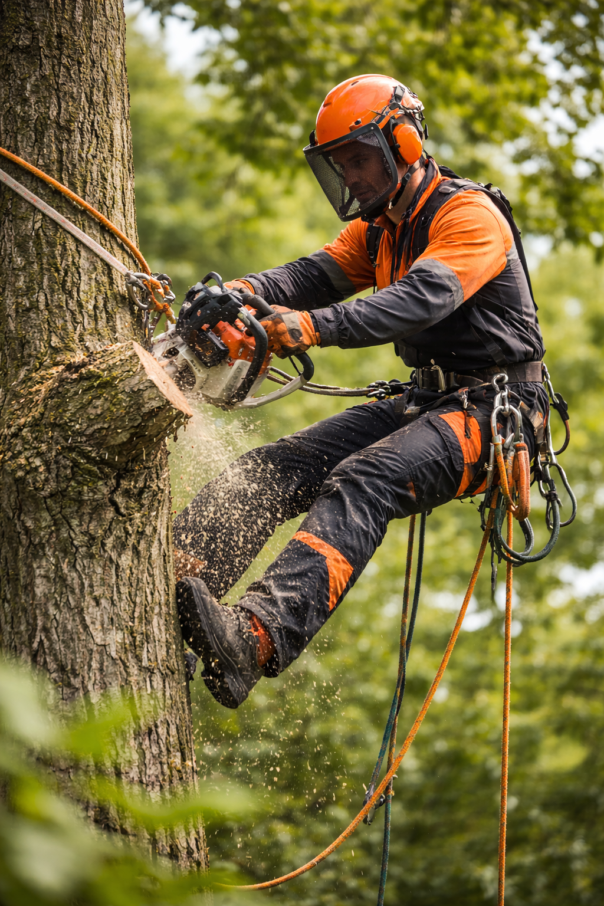
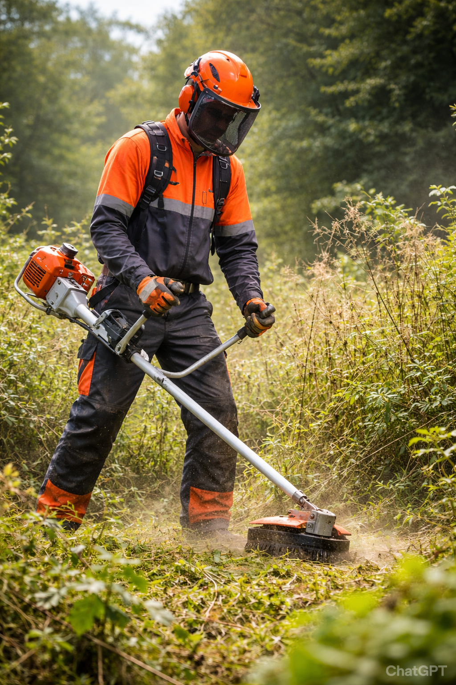
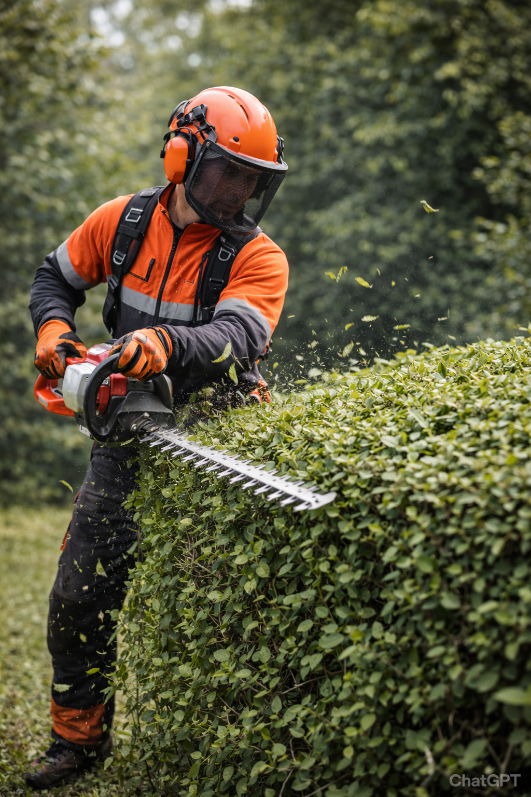
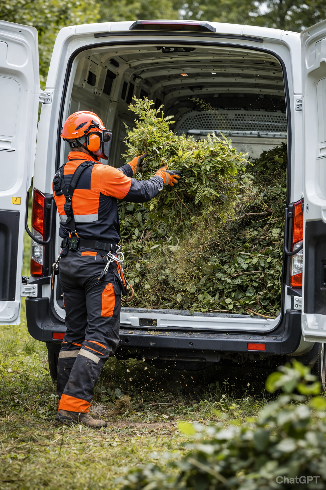

Teljeskörű Szolgáltatásaink
Favágás
Veszélyes, nehezen megközelíthető fák lebontása, épületek és kerítések felett is.
Favágás alpin technikával

Az alpin technikás favágás során a fát nem egyben döntjük ki, hanem kötéltechnikával, darabonként bontjuk le. Ez a módszer lehetővé teszi a precíz, kontrollált munkavégzést szűk, nehezen megközelíthető területeken is. Alpin technikás favágás akkor indokolt, ha a fa épületek, vezetékek, kerítések vagy egyéb akadályok közelében áll, és nincs elegendő hely a hagyományos fadöntéshez. Ideális megoldás városi környezetben vagy belső udvarokban.
Fadöntés

A fadöntés során a fa teljes egészében, irányított módon kerül kivágásra a talajszinten. A munkát előzetes állapotfelmérés és tervezés előzi meg, hogy a fa a kijelölt irányba dőljön, biztonságosan, károkozás nélkül. Fadöntésre jellemzően akkor van szükség, ha a fa egészségi állapota leromlott, balesetveszélyessé vált. Elsősorban akkor alkalmazható, ha a környezetben elegendő szabad terület áll rendelkezésre.
Bozótirtás / Telektisztítás
Elhanyagolt területek, telkek és elvadult kertek teljes körű megtisztítása.
Bővebben a szolgáltatásról
Vállaljuk ipari parkok, magántelkek, építési területek és nehezen megközelíthető, elvadult részek szakszerű tisztítását. A sűrű aljnövényzet, cserjék, gaz és elszáradt fák eltávolításával a terület újra használhatóvá, beépíthetővé válik. Profi gépparkunkkal a legnagyobb dzsungellel is gyorsan elbánunk.
Faápolás
Fák egészségének megóvása, gallyazás és koronaalakítás a hosszabb élettartamért.
Bővebben a szolgáltatásról
A faápolás célja a fa esztétikumának és egészségének megőrzése, valamint a balesetek megelőzése. Szakszerű gallyazást, a száraz vagy letört ágak eltávolítását, ifjító metszéseket és a lombkorona statikai megerősítését végezzük el, hogy a fái még évtizedekig díszíthessék a környezetüket.
Sövény nyírás
Túlméretezett, elhanyagolt sövények szakszerű visszavágása, alakítása és formázása.
Bővebben a szolgáltatásról
Legyen szó esztétikai formázásról, határoló sövények visszavágásáról vagy öreg, megkopott növények ifjító metszéséről, precíz és szemet gyönyörködtető végeredményt garantálunk. Vállaljuk tujasorok, bokrok és egyéb élősövények alkalmi vagy rendszeres karbantartását is.
Zöldhulladék elszállítás
A favágás és telektisztítás során keletkező zöldhulladék szakszerű aprítása és elszállítása.
Bővebben a szolgáltatásról
Célunk, hogy a munkaterületet ugyanolyan tisztán, vagy még tisztábban adjuk át, mint ahogy átvettük. Nem hagyunk magunk után rendetlenséget: a levágott gallyakat és ágakat igény szerint felaprítjuk, a vastagabb rönköket feldaraboljuk, a teljes megmaradt zöldhulladékot pedig elszállítjuk a helyszínről.